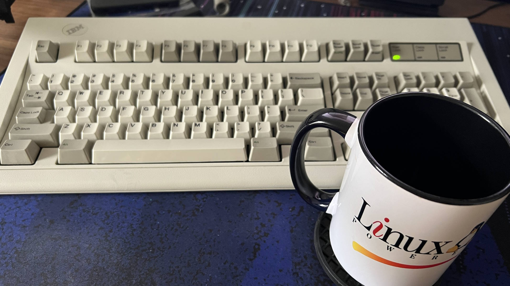
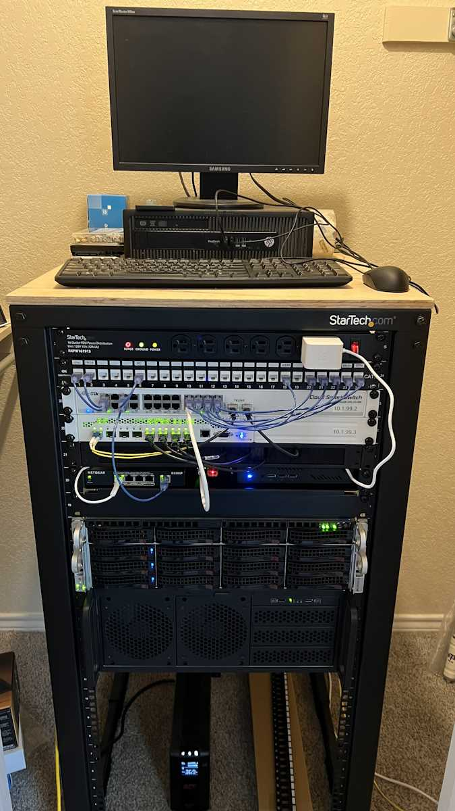

Best Cup of the Day!
Squarespace, Wordpress? Fuck that. This website is completely made by my hands on this keyboard.

Paying someone money to host my tiny website is stupid. So we don't do it here!
This website is being hosted one of my servers, handed out to all of you over the dark and scary public internet. Here's what it looks like:

Just some e-waste racked in this cabinet. Lotta cables and blinky lights, too. Once we have all the hardware running, we attach a penguin to make the computers tick and we're done!
Thanks NS for helping me get started years ago. Man, I love that penguin.